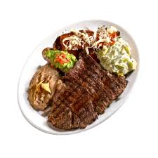

28.Tamaulipas

- Platillo: Tampiqueña
- Ingredientes: Filete de res, enchilada, frijoles, arroz, guacamole, cebolla asada.
- Historia: Creada en 1939 por el chef José Inés Loredo, originario de Tampico, para representar la variedad del noreste.
- Dato curioso: El nombre "tampiqueña" es un homenaje a las mujeres de Tampico.